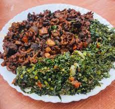

Homemade Tipes(Matumbo)

A well prepared tripes delicacy
Matumbo, AKA tripe has always been one of my favorite proteins. Growing up, I’d always look forward to Matumbo-ugali nights.
Description
Matumbo is a common meal among Kenyans. Served both at home and at various vibandaski (local spots) and restaurants.Matumbo in English is known as tripe, a name known to very few.
It is the edible stomach lining/ intestines of farm animals especially cows.
The meat is not only affordable but an excellent source of protein, a good source of zinc and phosphorous.It's best enjoyed with ugali, mukimo or chapati and a side of greens.
Ingredients
- 1/2 kg of clean Matumbo trip
- 1 tablespoon of cumin
- 6-8 cloves of garlic
- 1/2 tablespoon of ginger
- 1 tablespoon of curry powder
- Chili or chili flakes
- 1 large chopped onion
- 2 tomatoes
- 1 tablespoons of tomato paste
- 1 tablespoon of royco
- Dhania/ coriander
- 1/2 tablespoon of salt
- Black pepper
Steps
- Make sure the matumbo is fully cooked before cutting into your desired shape and size.
- In a suitable sufuria/pot, fry the onion and garlic until slightly brown.
- Add the tomatoes and cook until soft adding little water if the mixture starts sticking to the surface.
- Add the Knorr beef cubes and allow to melt for a few seconds before mixing into the tomato mix
- Add the peppers and cook for 1 minute, then the cooked matumbo which you should also mix into the mixture.
- Add hot water and allow to simmer the food for 3 minutes.
- Dissolve the Royco in cold water before pouring into the simmering stew. Cook for a further 2 minutes to allow the gravy to thicken.
Serve it hot with ugali, chapati, spaghetti, mukimo or rice. We hope you enjoy the meal.